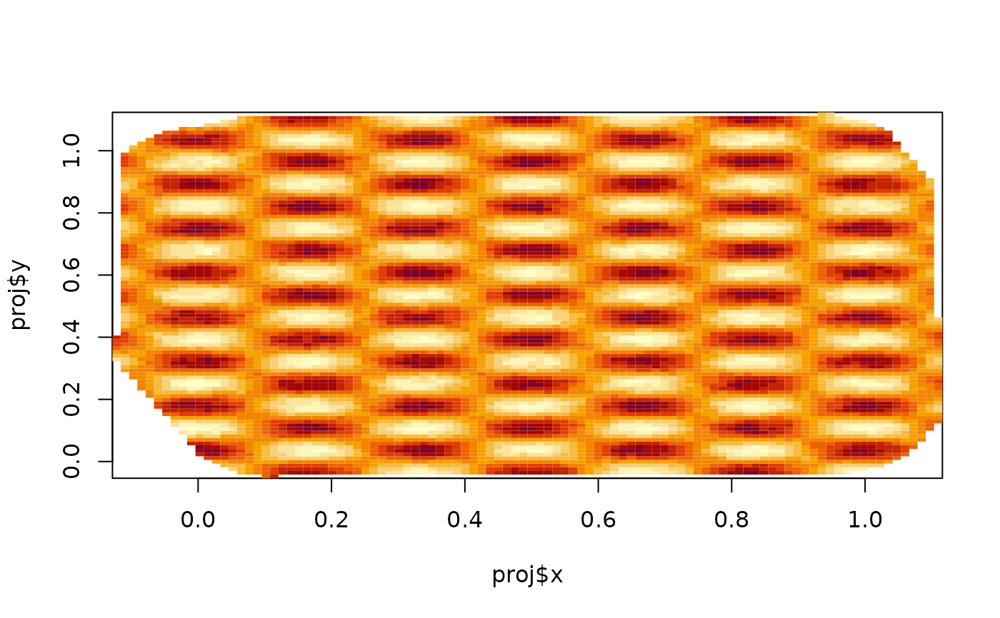

Calculate evaluation information and/or evaluate a function
defined on an inla.mesh or inla.mesh.1d object.
Usage
fm_evaluate(...)
# S3 method for inla.mesh
fm_evaluate(mesh, field, ...)
# S3 method for inla.mesh.1d
fm_evaluate(mesh, field, ...)
# S3 method for fm_evaluator
fm_evaluate(projector, field, ...)
fm_evaluator(...)
fm_evaluator_inla_mesh(mesh, loc = NULL, crs = NULL, ...)
fm_evaluator_inla_mesh_1d(mesh, loc, ...)
fm_evaluator_lattice(
mesh,
xlim = NULL,
ylim = NULL,
dims = c(100, 100),
projection = NULL,
crs = NULL,
...
)
# S3 method for inla.mesh
fm_evaluator(mesh, loc = NULL, lattice = NULL, crs = NULL, ...)
# S3 method for inla.mesh.1d
fm_evaluator(mesh, loc = NULL, xlim = mesh$interval, dims = 100, ...)Arguments
- ...
Additional arguments passed on to methods.
- mesh
An
inla.meshorinla.mesh.1dobject.- field
Basis function weights, one per mesh basis function, describing the function to be evaluated at the projection locations
- projector
An
fm_evaluatorobject.- loc
Projection locations. Can be a matrix,
SpatialPoints,SpatialPointsDataFrame,sf,sfc, orsfgobject.- crs
An optional CRS or inla.CRS object associated with
locand/orlattice.- xlim
X-axis limits for a lattice. For R2 meshes, defaults to covering the domain.
- ylim
Y-axis limits for a lattice. For R2 meshes, defaults to covering the domain.
- dims
Lattice dimensions.
- projection
One of
c("default", "longlat", "longsinlat", "mollweide").- lattice
An
inla.mesh.lattice()object.
Functions
fm_evaluate(): Returns the field function evaluated at the locations determined by anfm_evaluatorobject.fm_evaluate(mesh, field = field, ...)is a shortcut tofm_evaluate(fm_evaluator(mesh, ...), field = field).fm_evaluator(): Returns the andfm_evaluatorlist object with evaluation information. Theprojelement contains a mapping matrixAand a logical vectorok, that indicates which locations were mappable to the input mesh. Forinla.meshinput,projalso contains a matrixbaryand vectort, with the barycentric coordinates within the triangle each input location falls in.fm_evaluator_lattice(): Creates aninla.mesh.lattice, by default covering the input mesh.fm_evaluator(inla.mesh): The...arguments are passed on tofm_evaluator_lattice()if nolocorlatticeis provided.
Author
Finn Lindgren finn.lindgren@gmail.com
Examples
if (bru_safe_inla()) {
n <- 20
loc <- matrix(runif(n * 2), n, 2)
mesh <- INLA::inla.mesh.create(loc, refine = list(max.edge = 0.05))
proj <- fm_evaluator(mesh)
field <- cos(mesh$loc[, 1] * 2 * pi * 3) * sin(mesh$loc[, 2] * 2 * pi * 7)
image(proj$x, proj$y, fm_evaluate(proj, field))
}

# \donttest{
if (bru_safe_inla() &&
require(rgl)) {
plot(mesh, rgl = TRUE, col = field, draw.edges = FALSE, draw.vertices = FALSE)
}
#> Loading required package: rgl
#> Warning: RGL: unable to open X11 display
#> Warning: 'rgl.init' failed, running with 'rgl.useNULL = TRUE'.
# }